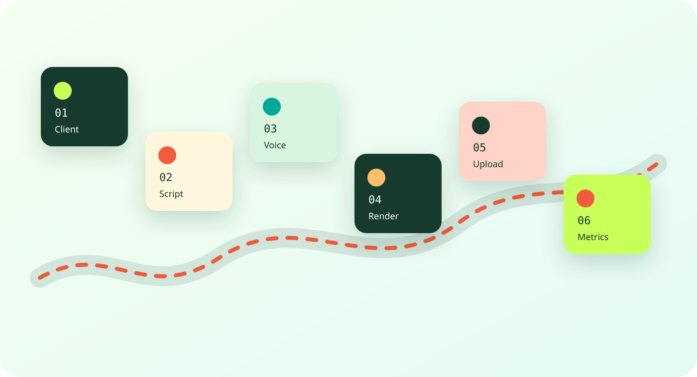
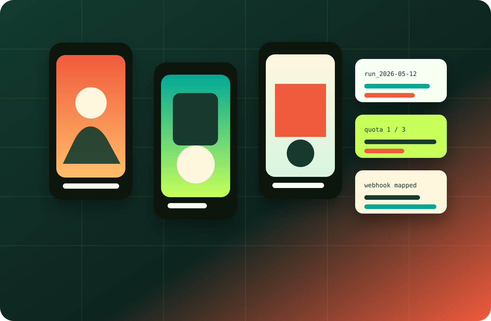
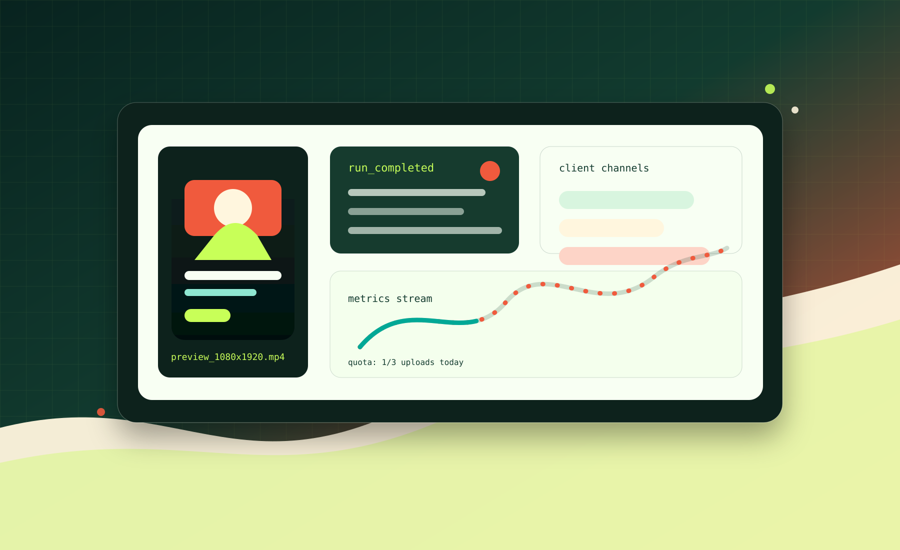

Runs without vendors
Stub providers let the whole pipeline run locally before any paid API keys exist.
Local-first AI content operations
A production-minded TypeScript pipeline for generating, rendering, publishing, and observing short-form video content across multiple client channels.
What it is
The repo models the work a real content automation system has to survive: client profiles, topic selection, script quality gates, voice synthesis, avatar rendering, upload quotas, metrics, run logs, retries, and provider migration.
Stub providers let the whole pipeline run locally before any paid API keys exist.
Multiple channel profiles can run from the same runtime with separate logs and quotas.
Failure simulation, retries, quota checks, and run artifacts make debugging visible.
Architecture

Examples
The CLI is built for the way automation actually gets adopted: start in stubs, validate output locally, inspect health, then switch providers one at a time.

pnpm install
cp .env.example .env
cp data/clients.example.json data/clients.json
pnpm dev -- run --client tech_en_gb_stubWhat this advertises
It solves a recognizable business workflow, not a toy problem dressed up as AI.
Provider adapters, stubs, schemas, logs, and tests show how you reduce future risk.
Health checks, quotas, and failure simulation make the repo feel ready for real use.
The local-first setup lets someone understand the value before handing over secrets.
Control surface
The site frames the repo as a modern automation product: visual, clear, operational, and credible enough to send to a prospect without adding a long explanation.

Try it
The repo is designed to be approachable on a fresh machine and honest about what still needs real provider implementation before production use.
git clone https://github.com/PaulJMaddison/ai-shorts-agent.git
cd ai-shorts-agent
pnpm install
cp .env.example .env
pnpm dev -- doctor
pnpm dev -- run --client tech_en_gb_stub